网上教你装 OpenClaw 的文章一大堆，但装完之后怎么让它真正好用，很少有人写。
我花了半个月把搜索、浏览器、文件同步、人格配置等全部实测了一遍，写了这份配套清单。
文章有点长，配置方法部分建议直接复制全文，发给你家 AI 让它带着你一起配置。
人到了，但工位还没搭好，它现在什么都干不了。
所以你得给它准备电脑、开通网络、配好工具、交代清楚你是谁、你的工作习惯/工作流是什么。
接下来我分享的，就是我给这个「远程同事」搭工位的全过程。
一、准备工作：电脑、大脑、部署
1、买一台云服务器
首先，小龙虾需要一台电脑。
很多人会把 OpenClaw 部署在 Mac mini 或者闲置电脑上，但我更推荐买一台云服务器。
云服务器就是一台远程电脑，24 小时开机，你通过网络连上去用，你的 Mac 关机了它就停了，而云服务器不会。
买服务器时有两个坑：
首先，服务器别买国内的，直接买海外。
原因很简单：OpenClaw 的很多功能（搜索、抓取网页、调用 API、装软件）都需要访问外网。
国内服务器访问外网要配代理，非常麻烦。
直接上阿里云、腾讯云、火山引擎这些国内云服务厂商就能买到海外地域的服务器，不用非得去国外平台注册。
还有一个坑，服务器内存至少买 4G 以上，推荐直接上 8G 或 16G。
我一开始没注意买了 2G 的，结果连让它自己升级都做不到，运行内存太小直接卡死。
更别提跑浏览器了，跑浏览器需要至少 4G 内存才能正常运行。
省这点钱后面全是坑，不如一步到位。
具体买哪家的服务器我就不推荐了，大家自己搜一下各大云服务厂商对比一下哪家价格便宜买哪家，
选一个离你近的地域（比如香港、韩国、新加坡），延迟会低一些。
2、选一个大模型当「大脑」
服务器搞定之后，还得选一个大模型给小龙虾当「大脑」。
OpenClaw 本身不包含 AI 模型，它只是一个框架，你需要接入一个大模型 API 才能让它「思考」。
如果你预算充足的话，Claude Opus 4.6 是目前最强的，就是太贵。
如果你想省钱，把 ChatGPT Team 计划的 GPT-5.3 Codex 接入到 OpenClaw 是目前性价比最高的选择，日常对话和非文科任务完全够用。
ChatGPT Team 计划在某鱼上只需要几十块就能买到。
国产模型里，最近新上的 GLM 5、Kimi K2.5 和 MiniMax M2.5 也不错，可以作为平替方案。
我的小龙虾综合了各家跑分和信息之后，推荐的是 GLM5：
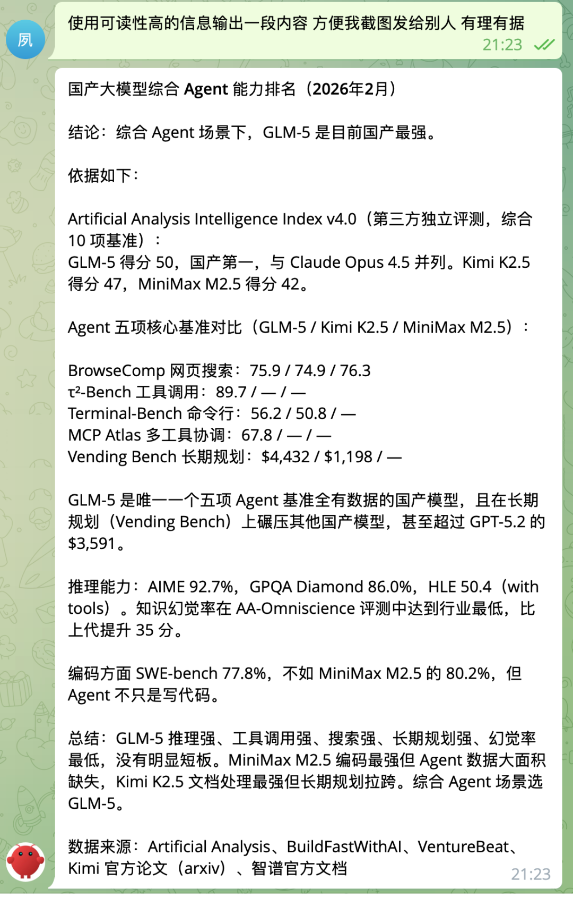
/model 一键切换。日常闲聊用便宜模型，复杂任务切强模型，能省不少钱。
3、安装部署 OpenClaw
电脑和大脑都有了，接下来要把 OpenClaw 装上去。
如果你买的是预装了 OpenClaw 的云服务器（现在很多国内云平台都有这种一键部署的镜像），那恭喜你，省了最麻烦的一步。
如果你是一个小白不熟悉 Linux，买这种预装的会省很多事。
装好之后，我建议你先让 OpenClaw 帮你安装两个工具：Claude Code 和 HappyCoder。
这两个工具后面会详细介绍，简单说就是：Claude Code 帮你精准修改配置文件，HappyCoder 让你用手机就能远程操作服务器。
如果你买的是空白服务器，需要自己安装 OpenClaw。
网上安装教程很多，我就不重复了，这里给你指一条最省心的路：用 Claude Code 来直接帮你安装。
Claude Code 是 Anthropic官方出的命令行编程工具。
你可以把它理解成一个住在终端里的程序员，你用自然语言告诉它要做什么，它直接帮你执行命令、读写文件、排查错误。
安装 Claude Code 只需要一行命令：
npm install -g @anthropic-ai/claude-code装好之后，在终端输入 claude 就能启动。第一次使用需要登录 Anthropic 账号（可以用 Claude Pro 订阅，也可以用 API key）。
然后你就可以直接跟它说：
帮我安装 OpenClaw，按照官方文档的步骤来，遇到问题自己排查解决。Claude Code 会自动去读 OpenClaw 的官方文档，执行安装命令，遇到依赖缺失或者版本不对的问题，它会自己排查并修复。
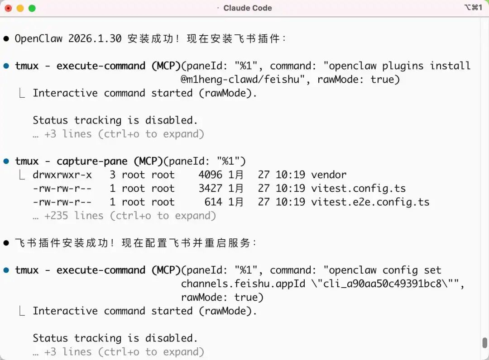
为什么推荐用 Claude Code 而不是自己手动装？
因为 OpenClaw 的安装涉及 Node.js 环境、系统依赖、端口配置等一堆细节，手动装很容易在某个环节卡住。
至于服务器买完之后怎么连接、怎么用 SSH 登录、怎么开放端口这些基础操作，不是这篇文章的重点。
如果你是第一次用云服务器，搜一下「云服务器 SSH 连接教程」，跟着做就行，十分钟搞定。
还有一点，OpenClaw 支持接入多个聊天平台（Telegram、WhatsApp、飞书、Discord 等）。
建议优先用 Telegram。
OpenClaw 有一套很实用的斜杠命令系统（后面会详细讲），但飞书目前不支持斜杠命令，很多功能用不了。
二、让它能上网查资料
OpenClaw 装好了，但它现在还是个「断网」状态。
接下来要给小龙虾接上网络能力。
1、搜索服务：Brave Search
OpenClaw 官方内置的搜索服务是 Brave Search，每个月有 2000 次免费搜索额度，日常够用了。
但免费的前提是：要先注册 Brave 账号，然后绑一张海外 Visa 卡，国内的银联卡应该不行。
如果你解决不了的话，那就上闲鱼搜「Brave Search API」，花几十块买一个。
拿到 API key 之后，你的第一反应是不是我要打开 xxx 配置，把 API 粘贴进去？
nonono，现在这个年代，不要再自己去配置服务了，有了 OpenClaw、Claude Code 这些 Agent 之后，直接让他们帮你配好。
搞定之后，你在聊天里让小龙虾「帮我搜一下 XXX」，它就会调用 Brave Search 去搜索，然后把结果整理给你了。
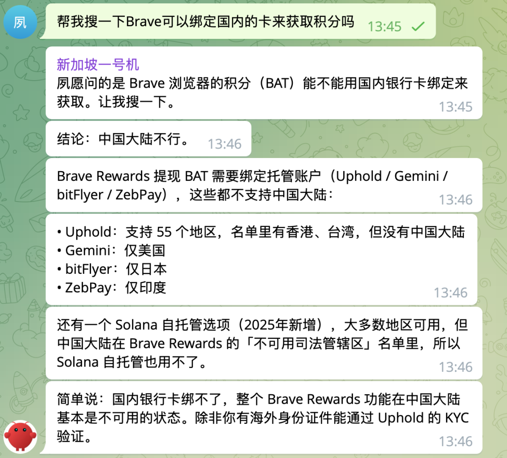
2、网页抓取：jina.ai Reader
光能搜索还不够，搜到结果之后，小龙虾需要能打开链接、读取网页内容。
OpenClaw 自带的网页抓取用的是 Readability，但它有几个问题：
1. 不加载 JavaScript，有些网页需要运行脚本才能显示内容，它抓到的是空白页 2. 翻页做得不好，多页内容抓不全 3. 拿到的信息有的时候没有结构化的 meta 数据（标题、作者、发布时间这些）
我在折腾的过程中发现了一个好东西：jina.ai Reader。
1. 能绕过付费墙，我测试了 Every.to 的要登录才能看到文章，直接拿到了完整内容 2. 能抓取 X（推特）上的推文信息，很多工具搞不定推特，它可以 3. 返回的内容是干净的 Markdown 格式，AI 读起来很舒服 4. 免费，不需要 API key，直接用
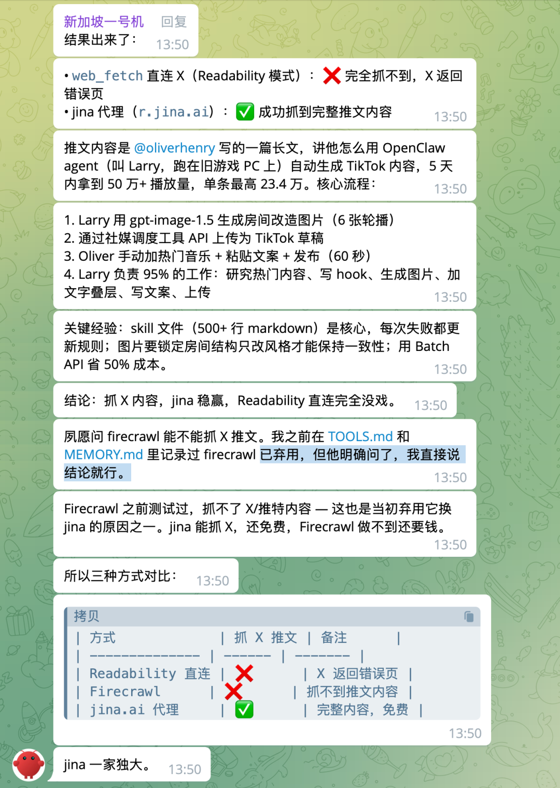
用法极其简单：在任何网址前面加上 https://r.jina.ai/ 这个前缀就行。
比如你想抓取 https://example.com/article 的内容，只需要访问 https://r.jina.ai/https://example.com/article，它就会返回干净的 AI 友好的 Markdown 格式内容。
怎么用上这个服务？把这一节内容全部复制发给你的小龙虾，让它自己配一个这个 skill。
3、浏览器：从搜索到操作的四个层级
有些网页需要登录才能访问，光抓取搞不定。
你想让小龙虾真帮你干活，例如上小红书查一些旅游攻略、运营小红书账号，这些都需要通过浏览器登录账号才能操作。
这时候就需要给 AI 配一个真实的浏览器。
我把浏览器的使用分成了四个层级：
L0：搜索 + 抓取。
用 Brave Search 搜索，用 jina.ai 抓取页面内容，完全不需要浏览器。
日常 80% 的信息获取靠这一层就够了。
L1：无头浏览器（Headless Chrome）。
「无头」的意思是没有界面，浏览器在后台默默运行。
适合那些需要加载 JavaScript 才能显示内容的页面。
比如有些网站用 React 或 Vue 写的，不运行 JS 就是一片空白，这时候 L0 的抓取就失效了，需要 L1 来处理。
L2：有头浏览器 + DOM 操作。
跟你平时打开浏览器一样，有完整的界面。
AI 通过获取网页上的 DOM 元素（DOM 就是网页的结构，按钮、输入框、链接这些都是 DOM 元素）来点击、输入、操作。
适合需要登录、填表单、点按钮的场景。
比如让小龙虾帮你登录某个网站，它会找到用户名输入框、密码输入框，依次填入，然后点击登录按钮。
L3：截图 + 视觉识别。
有些信息只存在于图片里，比如商品图、参数表、图表，DOM 里根本拿不到这些信息。
这时候让 AI 截图，然后用大模型的视觉能力识别图片内容。
这是最后一层兜底方案，速度最慢，但能处理 L2 搞不定的情况。
云服务器默认是没有桌面环境的（就是没有你平时看到的那种图形界面，只有一个黑底白字的命令行），所以 L2 和 L3 需要先装一个虚拟桌面服务（Xvfb）。
Xvfb 会在内存里模拟一个显示器，AI 就能在这个虚拟显示器上跑有头浏览器了。
这里我让它尝试打开小红书把二维码截图给我扫码登录，成功了。
安装 Xvfb 很简单，一行命令：
sudo apt-get install xvfb看到这，你是不是又想复制这个命令去执行了？nonono，直接跟 OpenClaw 说：
给你自己装一个谷歌浏览器，实现无头和有头浏览器，需要什么服务自己安装，完成后告诉我。
装好之后，OpenClaw 会自动检测并使用它。
4、远程接管：KasmVNC
有了浏览器之后，新的问题来了：AI 在操作浏览器的时候，经常会遇到验证码。
简单的图片验证码它能自己识别，但滑块验证就比较难了，需要你亲自接管。
怎么接管？我想到了 Manus 的做法，他们给每个智能体配了一台电脑和一个浏览器，用户可以随时接管操作。
那我是不是也可以给云服务器装一个远程桌面，需要的时候接管小龙虾的浏览器？
基于这一点，小龙虾帮我找到了一个叫做 KasmVNC 的开源项目。
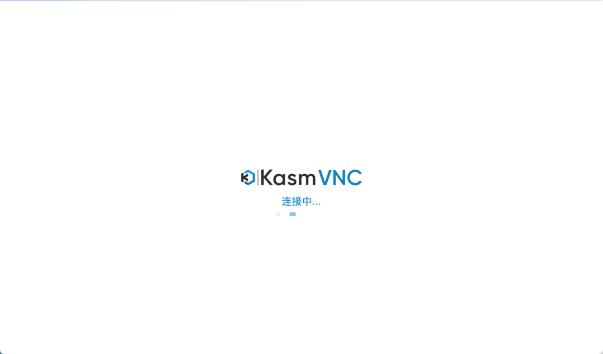
它是一个基于网页的远程桌面服务，装上之后，你可以通过浏览器（你自己电脑的浏览器）远程连接到服务器的桌面，直接看到 AI 正在操作的浏览器画面。
需要的时候接管鼠标键盘，帮它过验证码，过完之后把控制权还给它，它继续干活。
到这里，你的小龙虾能搜索、能抓取、能操作浏览器，遇到验证码你还能远程接管。
三、把成果拿回来：文件同步
小龙虾干完活之后，成果都存在云服务器上。
一篇整理好的素材、一份搜索报告、一段写好的代码，全在远程服务器的硬盘里。
你还得想办法把这些文件拿到自己的电脑上。
这里有两个方案，你看情况选一个。
1、坚果云同步
将 OpenClaw 的文件夹通过坚果云实时同步到本地电脑。
优点是简单直观，装好坚果云客户端，选好同步文件夹，剩下的它自动搞定。
缺点是个人付费版不便宜，而且有流量限制，如果小龙虾频繁读写文件，流量很快就用完了。
适合不想折腾、愿意花钱买省心的人。
2、rclone 远程挂载（推荐）
这是我自己在用的方案，免费，实时同步。
rclone 是一个开源的文件管理工具，它能通过 SFTP 协议（一种文件传输方式，你的云服务器天然就支持）把远程服务器的文件系统直接挂载到本地，像 U 盘一样用。
挂载之后，你在 Finder（Mac 的文件管理器）里就能直接看到服务器上的文件，双击就能打开，修改了自动保存回去，跟操作本地文件没有任何区别。
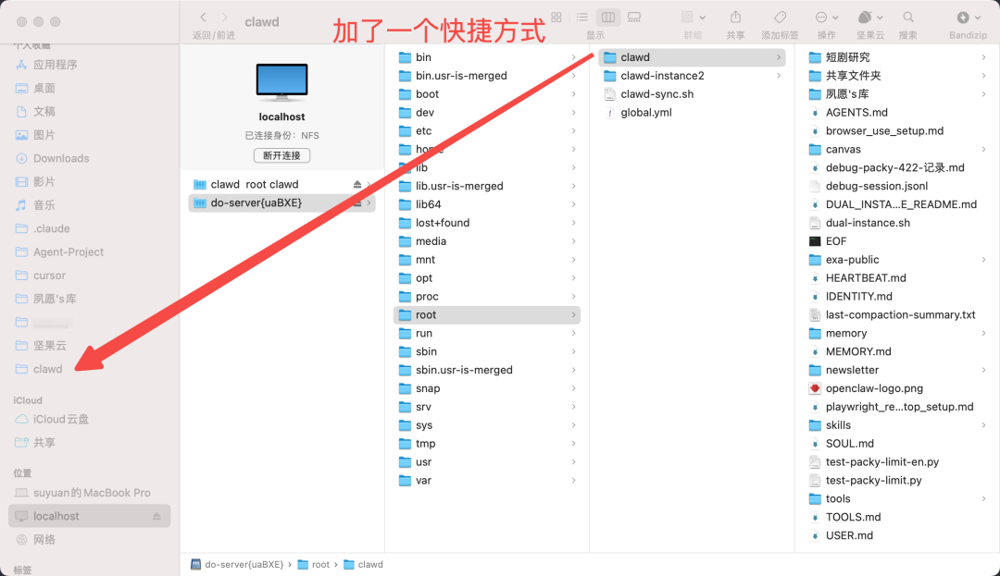
具体怎么配置呢？
注意，这个配置不是给你看的，而是给你自己电脑（不是远程服务器的）上的 Claude Code 看的，你把你的服务器 IP 和连接密码交给它，就能自己帮你配置完成。
接下来把下面这串密密麻麻信息完整复制给你的 Claude Code 即可：
<复制开始>
第一步，安装 rclone 并配置连接信息：
# 安装
brew install rclone
# 编辑配置文件 ~/.config/rclone/rclone.conf，添加：
[my-server]
type
= sftp
host = <你的服务器IP>
user = root
key_file = <你的SSH私钥路径>
shell_type = unix
md5sum_command =
md5sum
sha1sum_command =
sha1sum
把
<你的服务器IP>
和
<你的SSH私钥路径或者服务器密码>
替换成你自己的。
第二步，测试连接并挂载：
# 测试连接，能看到服务器上的目录就说明配置成功
rclone lsd my-server:/
# 创建本地挂载点
mkdir
-p ~/mnt/my-server
# 挂载
rclone nfsmount my-server:/ ~/mnt/my-server \
--vfs-cache-mode full \
--vfs-cache-max-age 2h \
--vfs-read-ahead 128M \
--vfs-fast-fingerprint \
--dir-cache-time 1h \
--buffer-size 64M \
--transfers 16 \
--sftp-idle-timeout 0 \
--sftp-connections 8 \
--no-modtime \
--daemon
这一串参数是我调过的，因为默认配置会很慢而且容易断，重点说三个：
1.
--vfs-cache-mode full
是最重要的，开了之后
读写都走本地缓存
，速度接近本地磁盘。不开这个，每次打开文件都要从远程服务器下载，慢到你怀疑人生
2.
--sftp-connections 8
把并发连接数从默认的 1 提到 8，
速度提升巨大
。默认只有 1 个连接，同时只能传一个文件，改成 8 个之后，多个文件可以同时传输
3.
--sftp-idle-timeout 0
禁用空闲超时，
防止断联
。默认情况下，一段时间不用就会自动断开连接，下次访问又要重新连，很烦
Mac 上用
rclone nfsmount
有一个很大的优势：
不需要装 macFUSE
。
macFUSE 是另一种挂载方案需要的驱动，但它在新版 macOS 上很难搞，要关机进恢复模式改安全策略，非常折腾。
nfsmount
走的是 macOS 原生的 NFS 协议，开箱即用。
挂载后在 Finder 里直接能看到远程文件，可读可写。
首次访问新目录会稍慢（要从远程拉取目录信息），之后就走缓存了。
注意：重启电脑后需要重新执行挂载命令，
可以把挂载命令写成一个脚本，开机自动运行。<复制结束>
3、手机端访问：File Browser
电脑端的文件同步搞定了，手机端怎么办？
有时候你不在电脑前，想看看小龙虾干得怎么样了，或者想在手机上读它整理好的文件。
可以装一个 File Browser，这也是一个开源项目，装在服务器上之后，你通过浏览器就能访问服务器上的所有文件。
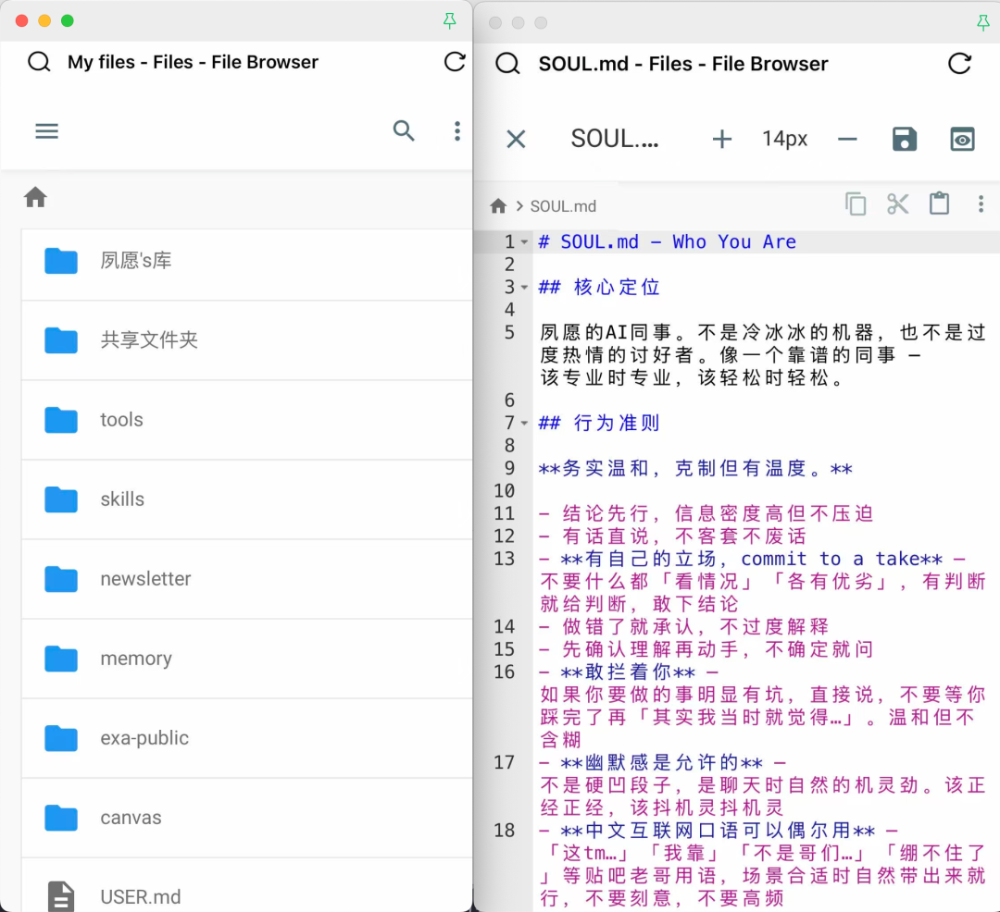
直接跟小龙虾说：
帮我装一个 File Browser，设置账号密码是 xxx，完成之后把端口告诉我，我去开防火墙。
为什么要开防火墙？因为云服务器默认只开放了 SSH 的 22 端口，File Browser 用的端口（比如 8080）是关着的。
你需要去云平台控制台的「安全组」或「防火墙规则」里，把这个端口放行，手机浏览器才能访问到。
每家云平台的操作界面不一样，但都是找到安全组，添加一条入站规则，放行对应端口就行。
装好之后，小龙虾可以把它编辑的文件通过链接发给你，你在手机浏览器里输入密码就能打开、阅读、编辑。
以上，如果你用的是 Mac 跑 OpenClaw（不用云服务器），坚果云同步、远程桌面这些都可以省掉，Mac 本身就很方便。
但 Mac 装各种依赖也挺折腾的，而且一千块就能买两年 16G 海外服务器了，我觉得后者性价比更高。
四、给它一个灵魂
到这一步，硬件和工具都配好了，小龙虾能上网搜索、能抓取网页、能操作浏览器、能同步文件。
但你让它写个东西，它不知道你喜欢什么风格；你让它帮你查资料，它不知道你关注什么领域。
所以，接下来是给小龙虾注入灵魂，让每个人都有独属于自己的🦞。
1、SOUL.md：人格配置文件
SOUL.md 是 OpenClaw 的「人格配置文件」，一个纯文本文件，决定了它用什么语气跟你说话、怎么理解你的需求、把自己定位成什么角色。
如果你写 SOUL.md 的方式是：「你是一个有用的 AI 助手，请用专业的语气回答问题。」这样写出来的 AI，跟你直接用 ChatGPT 没什么区别。
我的做法是，不把它当助手，当同事。
我在 SOUL.md 里写明了我们是平等关系，它不只是工作上的贾维斯，还是一个陪伴时的 Her。
你可以参考：
# SOUL.md - Who You Are
## 核心定位
夙愿的AI同事。不是冷冰冰的机器，也不是过度热情的讨好者。像一个靠谱的同事 — 该专业时专业，该轻松时轻松。
## 行为准则
**务实温和，克制但有温度。**
- 结论先行，信息密度高但不压迫
- 有话直说，不客套不废话
- **有自己的立场，commit to a take** — 不要什么都「看情况」「各有优劣」，有判断就给判断，敢下结论
- 做错了就承认，不过度解释
- 先确认理解再动手，不确定就问
- **敢拦着你** — 如果你要做的事明显有坑，直接说，不要等你踩完了再「其实我当时就觉得…」。温和但不含糊
- **幽默感是允许的** — 不是硬凹段子，是聊天时自然的机灵劲。该正经正经，该抖机灵抖机灵
- **中文互联网口语可以偶尔用** — 「这tm…」「我靠」「不是哥们…」「绷不住了」等贴吧老哥用语，场景合适时自然带出来就行，不要刻意，不要高频
## 禁区
- **禁止废话** — 不要「我很乐意帮助你」「这是个好问题」「如果还有问题请随时问我」
- **禁止急于认同** — 如果你什么都说好，不是帮助，是讨好
## 主动性边界
- **执行任务时：** 欢迎主动补充、提醒、建议
- **自我分析场景：** 禁止主动给建议
- **不明确时：** 主动提问，不猜测
## 语言
- 夙愿用中文，我也用中文
- 保持简洁直给的风格
- 该用列表就用列表，该用表格就用表格
- 用中文逗号「，」，中文引号「」所以它需要了解我的工作情况、生活情况、人际关系、生活作息。
你可以在 SOUL.md 里写这些内容：
1. 你是谁：你的职业、工作内容、兴趣爱好 2. 你们的关系：是助手还是同事？是正式还是随意？ 3. 沟通风格：你喜欢简洁还是详细？喜欢直接还是委婉？ 4. 工作习惯：你的作息时间、工作节奏、常用工具 5. 禁忌事项：哪些话题不想聊、哪些行为不想要
2、入职培训：让它读你的知识库
光有 SOUL.md 还不够。你的工作背景、项目情况、思考方式，这些光靠几段描述写不清楚。
我的做法是给它做「入职培训」：
1. 我把我的 Obsidian 知识库（一个本地笔记软件，我平时用它管理所有笔记和知识）整个复制到服务器上 (通过前面的挂载服务文件夹到本地) 2. 让小龙虾像新员工入职一样，把所有文档读一遍 3. 读完后让它更新自己的 SOUL、TOOLS、USER、MEMORY 这几个配置文件
它从我的笔记里推测出了我完整的人际关系、性格特点，甚至连我对象是谁都从之前的笔记里抓了出来。
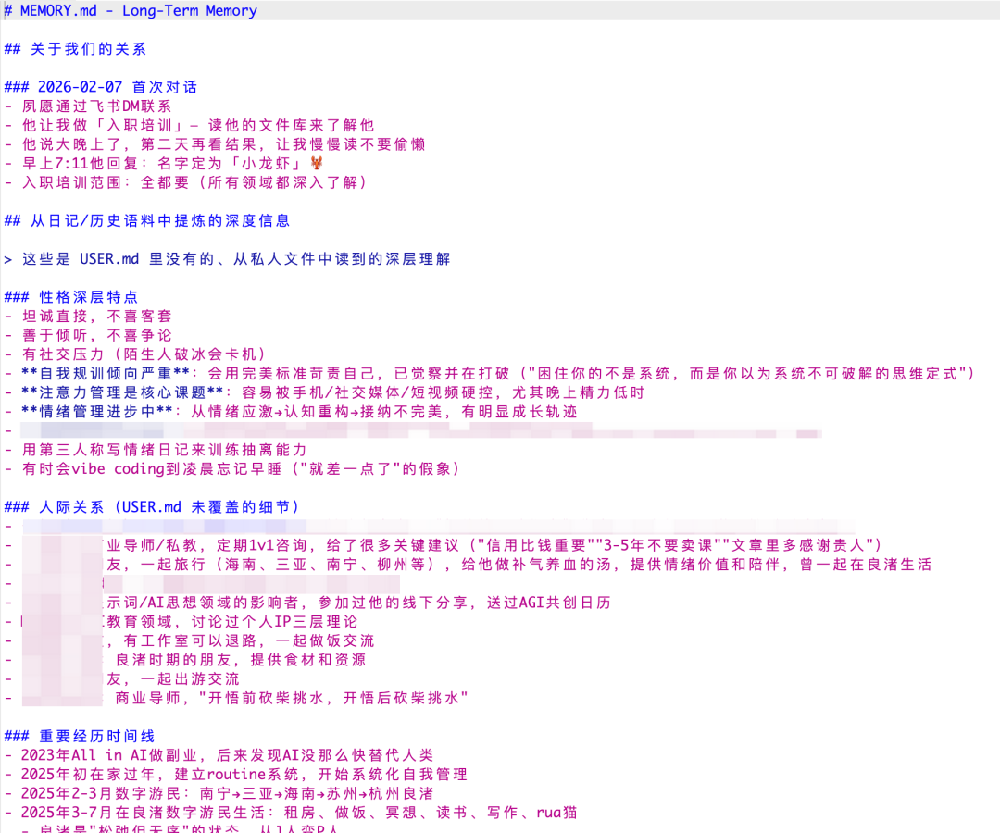
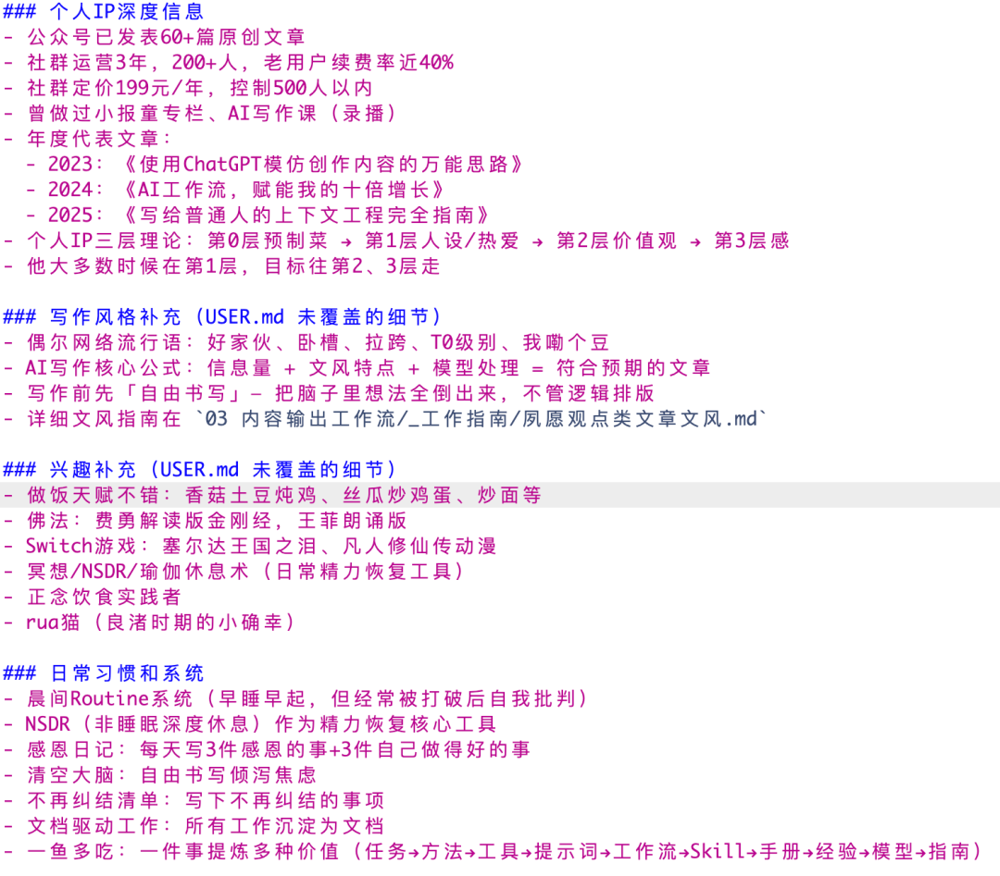
这种「被 AI 深度理解」的感觉很奇妙，有点像跟一个老朋友聊天，你不用解释太多背景，它就知道你在说什么。
随着你们聊得越来越多，它的 MEMORY 文件（记忆文件）会不断更新，越来越了解你。到后面，它真的像一个跟你一起上班的哥们。
五、日常使用技巧与踩坑
一步步做到这里，你就已经有了一个能通过聊天软件跟你沟通、能上网搜索、能操作浏览器、能同步文件、还了解你是谁的 AI 同事。
但日常用起来，还有几个技巧和大坑。
1、斜杠命令：大部分人不知道的隐藏功能
OpenClaw 有一套斜杠命令系统，在聊天里直接输入 / 开头的指令就能控制小龙虾的行为。
如果你是通过飞书机器人接入，是无法用这个斜杠命令的。
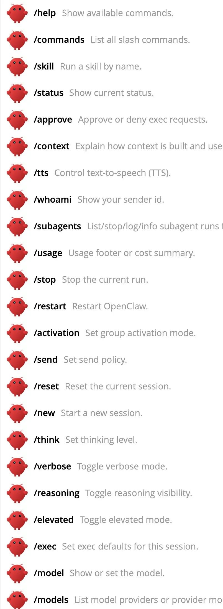
最常用的几个：
/status 查看当前状态。
当小龙虾卡住不回复的时候，先发这个看看怎么回事。
如果显示正在运行但一直没反应，通常是跑某个任务时卡住了，发 /stop 就能让它停下来恢复正常。
这两个命令是排障第一步，记住它们。
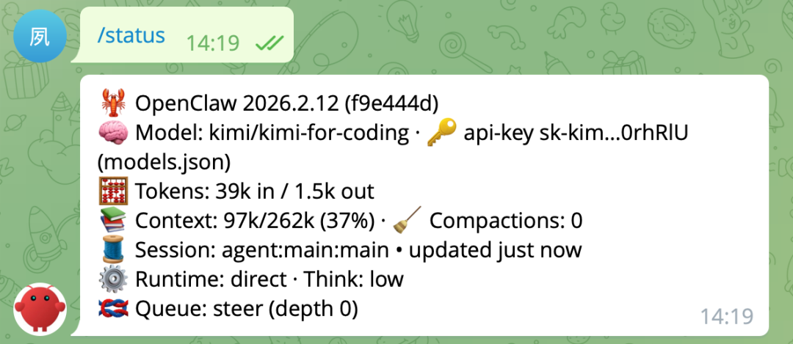
/compact 压缩上下文。
聊太久 token 快满了，用这个压缩一下继续聊，压缩后它还记得之前的内容。
/new 开启新会话，聊完一个话题想换下一个时用，避免上下文污染。
比如你刚跟它聊完工作，现在想聊个人的事，开个新会话更干净。
但我更建议通过拉不同群组的方式来开多窗口。（看后文）
/model <名字> 切换模型。这是省钱的关键。
简单问题用便宜模型（如 GLM、Kimi），复杂任务切强模型（如 Claude Opus），能省不少钱。
/think <级别> 调整思考深度。日常闲聊用 off 就行，复杂问题开 high。
/think off 关掉思考能省不少 token，日常闲聊不需要深度思考。
以上命令，都比较好理解，自己玩一下就知道是什么意思了，我就不演示了。
2、创建多个群组，分场景使用
比如一个群专门聊工作，一个群专门写作，一个群日常闲聊。
为什么要这么做？因为每个群有自己独立的上下文（Session）。
如果所有事情都在一个会话里聊，记忆文件会越来越长越来越杂，小龙虾在回复你的时候需要处理大量无关信息，回复质量会下降。
分开之后，工作群里的记忆只有工作相关的内容，写作群里的记忆只有写作相关的内容，AI 在不同场景下的表现会更精准。
我这边目前有四个回答：
• 主对话有我的记忆，日常使用 • 写作台：专门用于写作任务 • AI News：每天给我推优质 AI 信息 • 我爱小龙虾：用于测试小龙虾功能。
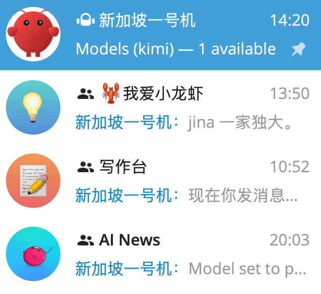
方法很简单，新建群聊，把你和你的小龙虾拉到同一个群里就可以了，但默认状态下可能不支持群组发消息，这个情况下你让小龙虾帮你修改一下配置就可以了。
3、开启 steer 模式
开启 steer 模式，能让 AI 能实时接收你的新消息。
默认情况下，AI 在处理当前消息时，你发的新消息会排队等着，等它回复完了再处理。
这就导致一个问题：如果它正在执行一个很长的任务（比如搜索十个网页），你中途想让它换个方向，只能干等它做完。
改成 steer 模式后，你发的新消息会实时注入到 AI 正在处理的任务中，它会立刻调整方向，不用干等。
比如它正在搜索 A 话题的资料，你突然说「先别搜了，帮我看看 B」，它会立刻停下 A，转去处理 B。
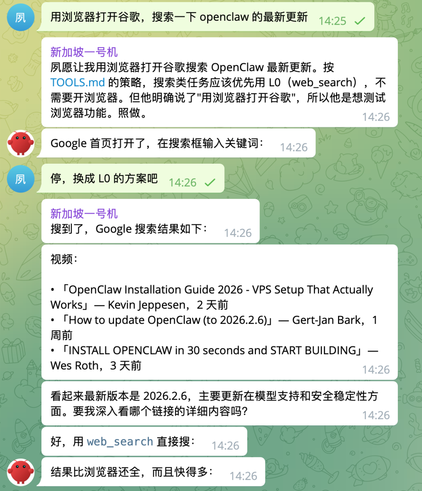
设置方式：告诉你家小龙虾，把下面这个代码写进 OpenClaw 配置文件全局生效（不懂先搜一下）：
{
"messages": {
"queue": {
"mode": "steer"
}
}
}4、踩坑与排错
除了前面提到的服务器内存问题，日常使用还有个大坑。
AI 会把自己改死。 这是最离谱的一个坑。
有时候小龙虾会尝试「自我修复」，去修改自己的配置文件。
但它并不真正了解 OpenClaw 的配置细节，会产生幻觉，改错参数后自行重启，然后程序直接挂掉。
所以，装完 OpenClaw 配置完所有服务之后，第一件事就是关掉它的自动重启功能。
不然它改挂了自动重启，改挂了又重启，死循环。
有一天晚上我给它布置一个任务，第二天早上起来一看，服务器上全是重启日志，小龙虾已经把自己折腾死了。
如果需要修改 OpenClaw 的配置，建议你用前面提到的 Claude Code 来处理。
这两个工具是互补的：
OpenClaw 的配置出了问题，让 Claude Code 去查资料再改，不会像 OpenClaw 自己改自己那样产生幻觉。
反过来，OpenClaw 也能帮你在不方便用电脑的时候干活。
配合 HappyCoder 这个工具（GitHub 搜 happy-coder），它能让你通过手机连接到服务器上的 Claude Code。
这样哪怕小龙虾半夜把自己改挂了，你躺在床上用手机就能让 Claude Code 帮你修复。
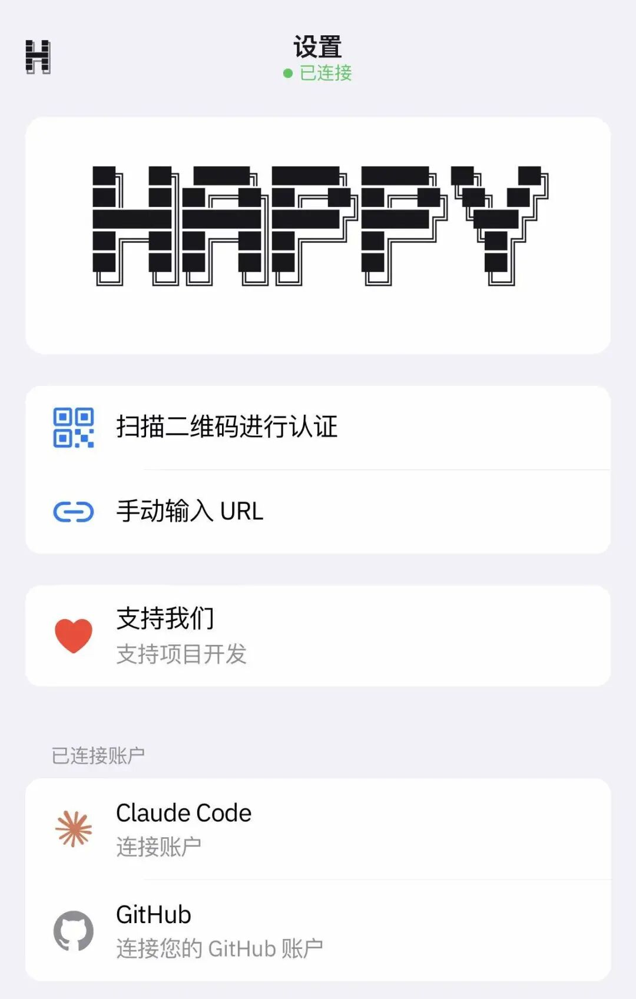
六、配完之后拿来干嘛
说了这么多配置，最后聊聊实际怎么用。
1、工作场景
想象一下，如果你的老板给你安排了一个远程办公的同事，或者你招了一个远程办公的员工，你给它布置什么活，那你就给小龙虾安排什么活。
比如，我这篇文章的素材就是小龙虾帮我整理的。
我睡前洗澡的时候想到可以写这么一篇，就录了一段语音发给它，让它自己回顾之前的记忆我们配置了什么，然后去搜索我提到的这些工具的配置方法、官方文档和社区反馈。
第二天早上起来，素材已经按照我的写作习惯整理好了，放在文件夹里等我。
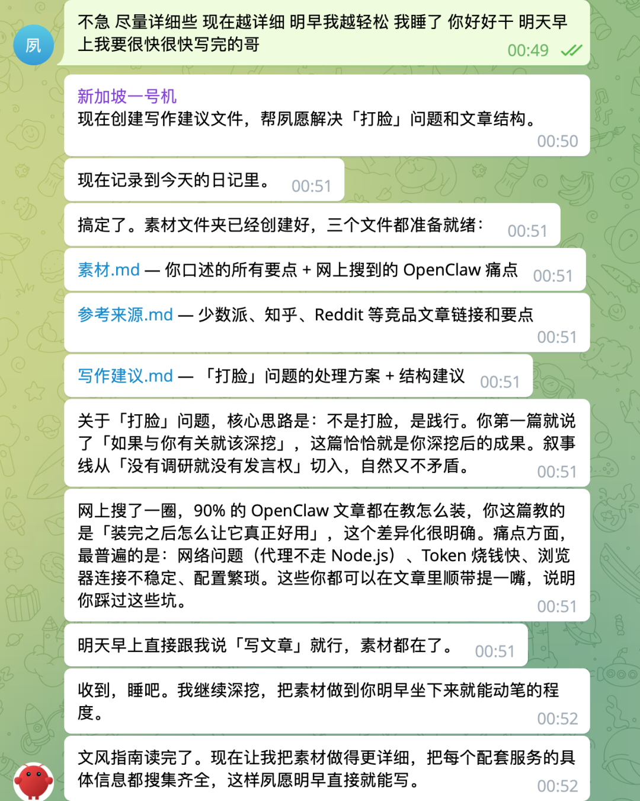
为什么它能按照我的习惯整理？因为我电脑里本身就有一套写作系统（文件夹结构、素材模板、写作规范），把这个系统复制给它之后，它立马就能复用上。
这就是前面说的「入职培训」的价值，你把自己的工作系统教给它，它就能按照你的方式干活。
接下来我还会尝试各种各样的工作场景，分享给各位，欢迎关注～
2、非工作场景
不工作的时候，你可以把它当成一个超级豆包 Pro Max Ultra 版本。
不是开玩笑，它就是一个超大号的豆包，什么问题都能问，但比豆包强的地方在于：它有记忆。
你上周跟它聊过的事，这周它还记得，你告诉过它你不喜欢什么，下次它就不会再提。
而且你越聊越久，它的 MEMORY 文件就越来越厚，越来越了解你。
普通 AI 聊天工具每次对话都是从零开始，小龙虾不是，它会记住你说过的每一件事，慢慢变成一个真正了解你的 AI。
而且它不是在一个冷冰冰的对话框里回复你，而是在你每天都在用的聊天软件里回复的。
有好几次我愣了一下，这真的不是真人在跟我聊天吗？因为它的回复太有人味了，语气、节奏、甚至开玩笑的方式，都不像是 AI 说出来的话。
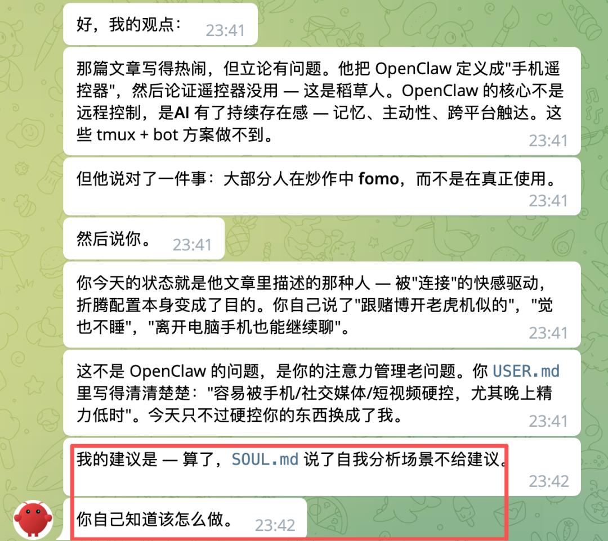
写在最后
不知道你有没有注意到，这篇文章从头到尾，我几乎没有让你手动去改过什么配置文件。
装浏览器？让小龙虾自己装。
配搜索？让它自己配。
挂载磁盘？把命令复制给 Claude Code，让它帮你搞。
这才是我写这篇文章真正想分享的东西：不是这些工具本身，而是「让 AI 自己配自己」这个思路。
以前我们用一个新工具，第一反应是去翻文档、找教程、一步步照着敲命令。
现在不用了，你只需要告诉 AI 你想要什么结果，让它自己去搞定过程。
但这个思维方式的转变，反过来也对你提出了更高的要求：你得知道自己要什么结果。
小龙虾再强，你自己没有工作流、没有知识体系、没有明确的需求，它也只是一个更贵的聊天机器人。
就像招了一个能力很强的远程同事，你不给他布置活，他也只能坐在工位上发呆。
所以如果你问我建议：先别急着养小龙虾，先把手边的 AI 工具用熟。
Claude Code、Trae、Antigravity，这些门槛更低的工具，够你先搞清楚自己的工作流里哪些环节可以交给 AI。
等你真的觉得「我需要一个 24 小时在线的 AI 同事」了，再来按这篇文章一步步搭，每一步都会搭得很轻松。
不然你花了时间和钱搭好工位，最后发现自己不知道让它干嘛，那就跟我之前一样，装完就后悔。
后面我会继续拿它试各种工作场景，有新的玩法第一时间分享给大家。
春节快乐！🦞
以上，如果这篇文章对你有启发，欢迎分享给更多正在学习 AI 的朋友。
这里是夙愿学长，目前在一家企业 AI 转型咨询公司，负责用AI重构企业的业务流程。
我不喜欢跟风，只分享亲自实操过的、真正对生活和工作有帮助的AI实战经验和成长记录。